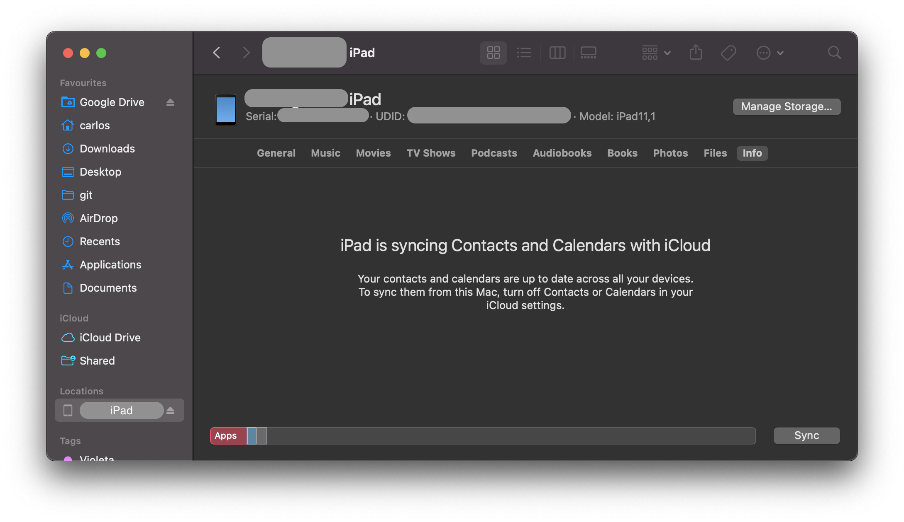
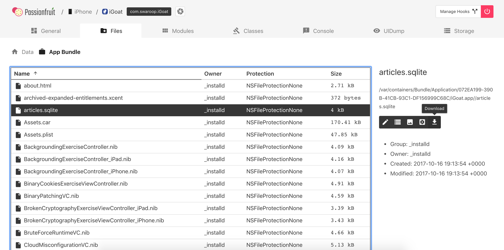
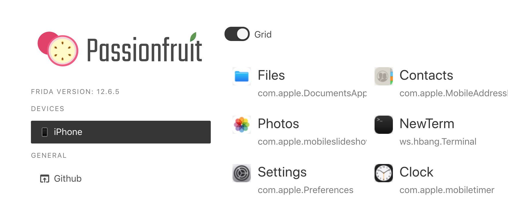
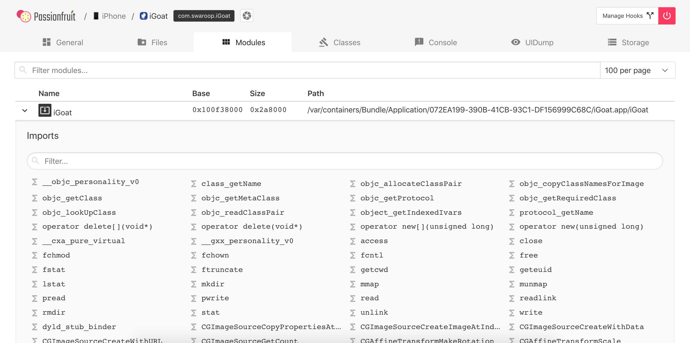
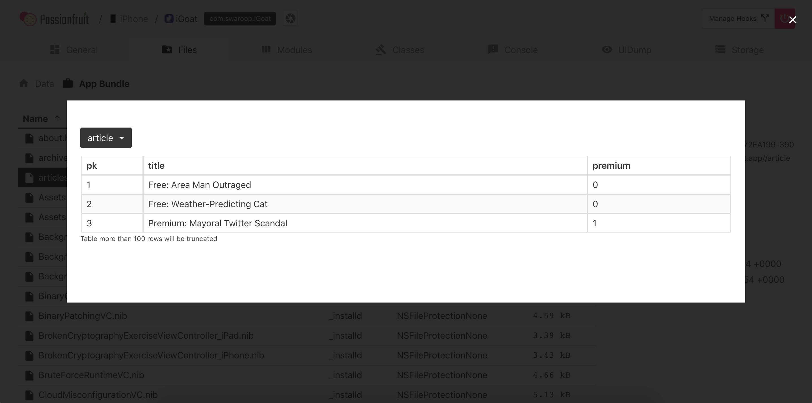
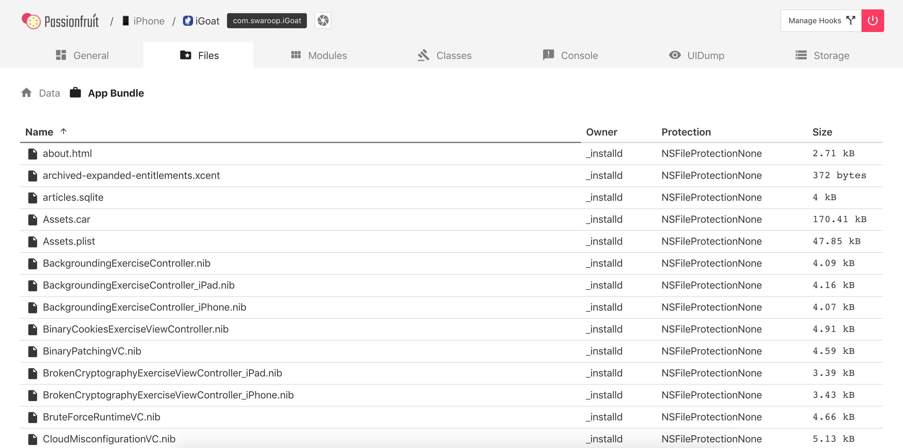
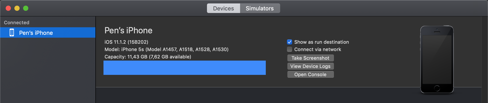
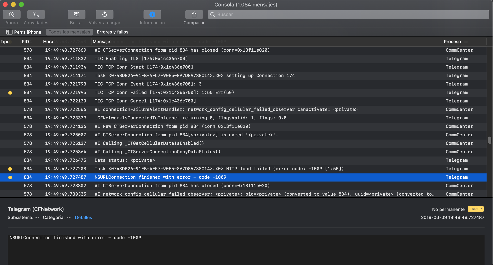
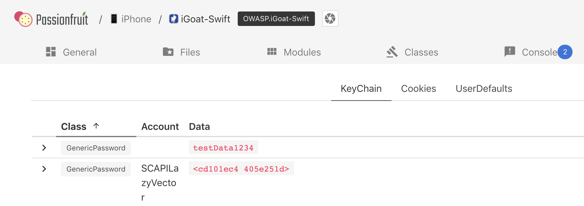

iOS Basic Security Testing¶
In the previous chapter, we provided an overview of the iOS platform and described the structure of its apps. In this chapter, we'll talk about setting up a security testing environment and introduce basic processes and techniques you can use to test iOS apps for security flaws. These basic processes are the foundation for the test cases outlined in the following chapters.
iOS Testing Setup¶
Although you can use a Linux or Windows host computer for testing, you'll find that many tasks are difficult or impossible on these platforms. In addition, the Xcode development environment and the iOS SDK are only available for macOS. This means that you'll definitely want to work on macOS for source code analysis and debugging (it also makes black box testing easier).
Host Device¶
The following is the most basic iOS app testing setup:
- Ideally macOS host computer with admin rights
- Xcode and Xcode Command Line Tools installed.
- Wi-Fi network that permits client-to-client traffic.
- At least one jailbroken iOS device (of the desired iOS version).
- Burp Suite or other interception proxy tool.
Testing Device¶
Getting the UDID of an iOS device¶
The UDID is a 40-digit unique sequence of letters and numbers to identify an iOS device. You can find the UDID of your iOS device on macOS Catalina onwards in the Finder app, as iTunes is not available anymore in Catalina. Open Finder and select the connected iOS device in the sidebar.

Click on the text containing the model, storage capacity, and battery information, and it will display the serial number, UDID, and model instead:

You can copy the UDID by right clicking on it.
It is also possible to get the UDID via various command line tools on macOS while the device is attached via USB:
-
By using the I/O Registry Explorer tool
ioreg:$ ioreg -p IOUSB -l | grep "USB Serial" | "USB Serial Number" = "9e8ada44246cee813e2f8c1407520bf2f84849ec" -
By using ideviceinstaller (also available on Linux):
$ brew install ideviceinstaller $ idevice_id -l 316f01bd160932d2bf2f95f1f142bc29b1c62dbc -
By using the system_profiler:
$ system_profiler SPUSBDataType | sed -n -e '/iPad/,/Serial/p;/iPhone/,/Serial/p;/iPod/,/Serial/p' | grep "Serial Number:" 2019-09-08 10:18:03.920 system_profiler[13251:1050356] SPUSBDevice: IOCreatePlugInInterfaceForService failed 0xe00002be Serial Number: 64655621de6ef5e56a874d63f1e1bdd14f7103b1 -
By using instruments:
instruments -s devices
Testing on a real device (Jailbroken)¶
You should have a jailbroken iPhone or iPad for running tests. These devices allow root access and tool installation, making the security testing process more straightforward. If you don't have access to a jailbroken device, you can apply the workarounds described later in this chapter, but be prepared for a more difficult experience.
Testing on the iOS Simulator¶
Unlike the Android emulator, which fully emulates the hardware of an actual Android device, the iOS SDK simulator offers a higher-level simulation of an iOS device. Most importantly, emulator binaries are compiled to x86 code instead of ARM code. Apps compiled for a real device don't run, making the simulator useless for black box analysis and reverse engineering.
Testing on an Emulator¶
Corellium is the only publicly available iOS emulator. It is an enterprise SaaS solution with a per user license model and does not offer community licenses.
Getting Privileged Access¶
iOS jailbreaking is often compared to Android rooting, but the process is actually quite different. To explain the difference, we'll first review the concepts of "rooting" and "flashing" on Android.
- Rooting: This typically involves installing the
subinary on the system or replacing the whole system with a rooted custom ROM. Exploits aren't required to obtain root access as long as the bootloader is accessible. - Flashing custom ROMs: This allows you to replace the OS that's running on the device after you unlock the bootloader. The bootloader may require an exploit to unlock it.
On iOS devices, flashing a custom ROM is impossible because the iOS bootloader only allows Apple-signed images to be booted and flashed. This is why even official iOS images can't be installed if they aren't signed by Apple, and it makes iOS downgrades only possible for as long as the previous iOS version is still signed.
The purpose of jailbreaking is to disable iOS protections (Apple's code signing mechanisms in particular) so that arbitrary unsigned code can run on the device (e.g. custom code or downloaded from alternative app stores such as Cydia or Sileo). The word "jailbreak" is a colloquial reference to all-in-one tools that automate the disabling process.
Developing a jailbreak for a given version of iOS is not easy. As a security tester, you'll most likely want to use publicly available jailbreak tools. Still, we recommend studying the techniques that have been used to jailbreak various versions of iOS-you'll encounter many interesting exploits and learn a lot about OS internals. For example, Pangu9 for iOS 9.x exploited at least five vulnerabilities, including a use-after-free kernel bug (CVE-2015-6794) and an arbitrary file system access vulnerability in the Photos app (CVE-2015-7037).
Some apps attempt to detect whether the iOS device on which they're running is jailbroken. This is because jailbreaking deactivates some of iOS' default security mechanisms. However, there are several ways to get around these detections, and we'll introduce them in the chapter "iOS Anti-Reversing Defenses".
Benefits of Jailbreaking¶
End users often jailbreak their devices to tweak the iOS system's appearance, add new features, and install third-party apps from unofficial app stores. For a security tester, however, jailbreaking an iOS device has even more benefits. They include, but aren't limited to, the following:
- Root access to the file system.
- Possibility of executing applications that haven't been signed by Apple (which includes many security tools).
- Unrestricted debugging and dynamic analysis.
- Access to the Objective-C or Swift runtime.
Jailbreak Types¶
There are tethered, semi-tethered, semi-untethered, and untethered jailbreaks.
-
Tethered jailbreaks don't persist through reboots, so re-applying jailbreaks requires the device to be connected (tethered) to a computer during every reboot. The device may not reboot at all if the computer is not connected.
-
Semi-tethered jailbreaks can't be re-applied unless the device is connected to a computer during reboot. The device can also boot into non-jailbroken mode on its own.
-
Semi-untethered jailbreaks allow the device to boot on its own, but the kernel patches (or user-land modifications) for disabling code signing aren't applied automatically. The user must re-jailbreak the device by starting an app or visiting a website (not requiring a connection to a computer, hence the term untethered).
-
Untethered jailbreaks are the most popular choice for end users because they need to be applied only once, after which the device will be permanently jailbroken.
Caveats and Considerations¶
Developing a jailbreak for iOS is becoming more and more complicated as Apple continues to harden their OS. Whenever Apple becomes aware of a vulnerability, it is patched and a system update is pushed out to all users. As it is not possible to downgrade to a specific version of iOS, and since Apple only allows you to update to the latest iOS version, it is a challenge to have a device which is running a version of iOS for which a jailbreak is available. Some vulnerabilities cannot be patched by software, such as the checkm8 exploit affecting the BootROM of all CPUs until A12.
If you have a jailbroken device that you use for security testing, keep it as is unless you're 100% sure that you can re-jailbreak it after upgrading to the latest iOS version. Consider getting one (or multiple) spare device(s) (which will be updated with every major iOS release) and waiting for a jailbreak to be released publicly. Apple is usually quick to release a patch once a jailbreak has been released publicly, so you only have a couple of days to downgrade (if it is still signed by Apple) to the affected iOS version and apply the jailbreak.
iOS upgrades are based on a challenge-response process (generating the so-called SHSH blobs as a result). The device will allow the OS installation only if the response to the challenge is signed by Apple. This is what researchers call a "signing window", and it is the reason you can't simply store the OTA firmware package you downloaded and load it onto the device whenever you want to. During minor iOS upgrades, two versions may both be signed by Apple (the latest one, and the previous iOS version). This is the only situation in which you can downgrade the iOS device. You can check the current signing window and download OTA firmware from the IPSW Downloads website.
For some devices and iOS versions, it is possible to downgrade to older versions in case the SHSH blobs for that device were collected when the signing window was active. More information on this can be found on the cfw iOS Guide - Saving Blobs
Which Jailbreaking Tool to Use¶
Different iOS versions require different jailbreaking techniques. Determine whether a public jailbreak is available for your version of iOS. Beware of fake tools and spyware, which are often hiding behind domain names that are similar to the name of the jailbreaking group/author.
The iOS jailbreak scene evolves so rapidly that providing up-to-date instructions is difficult. However, we can point you to some sources that are currently reliable.
Note that any modification you make to your device is at your own risk. While jailbreaking is typically safe, things can go wrong and you may end up bricking your device. No other party except yourself can be held accountable for any damage.
Basic Testing Operations¶
Accessing the Device Shell¶
One of the most common things you do when testing an app is accessing the device shell. In this section we'll see how to access the iOS shell both remotely from your host computer with/without a USB cable and locally from the device itself.
Remote Shell¶
In contrast to Android where you can easily access the device shell using the adb tool, on iOS you only have the option to access the remote shell via SSH. This also means that your iOS device must be jailbroken in order to connect to its shell from your host computer. For this section we assume that you've properly jailbroken your device and have either Cydia (see screenshot below) or Sileo installed. In the rest of the guide we will reference to Cydia, but the same packages should be available in Sileo.

In order to enable SSH access to your iOS device you can install the OpenSSH package. Once installed, be sure to connect both devices to the same Wi-Fi network and take a note of the device IP address, which you can find in the Settings -> Wi-Fi menu and tapping once on the info icon of the network you're connected to.
You can now access the remote device's shell by running ssh root@<device_ip_address>, which will log you in as the root user:
$ ssh root@192.168.197.234
root@192.168.197.234's password:
iPhone:~ root#
Press Control + D or type exit to quit.
When accessing your iOS device via SSH consider the following:
- The default users are
rootandmobile. - The default password for both is
alpine.
Remember to change the default password for both users
rootandmobileas anyone on the same network can find the IP address of your device and connect via the well-known default password, which will give them root access to your device.
If you forget your password and want to reset it to the default alpine:
- Edit the file
/private/etc/master.passwordon your jailbroken iOS device (using an on-device shell as shown below) - Find the lines:
root:xxxxxxxxx:0:0::0:0:System Administrator:/var/root:/bin/sh
mobile:xxxxxxxxx:501:501::0:0:Mobile User:/var/mobile:/bin/sh
- Change
xxxxxxxxxto/smx7MYTQIi2M(which is the hashed passwordalpine) - Save and exit
Connect to a Device via SSH over USB¶
During a real black box test, a reliable Wi-Fi connection may not be available. In this situation, you can use usbmuxd to connect to your device's SSH server via USB.
Connect macOS to an iOS device by installing and starting iproxy:
$ brew install libimobiledevice
$ iproxy 2222 22
waiting for connection
The above command maps port 22 on the iOS device to port 2222 on localhost. You can also make iproxy run automatically in the background if you don't want to run the binary every time you want to SSH over USB.
With the following command in a new terminal window, you can connect to the device:
$ ssh -p 2222 root@localhost
root@localhost's password:
iPhone:~ root#
Small note on USB of an iDevice: on an iOS device you cannot make data connections anymore after 1 hour of being in a locked state, unless you unlock it again due to the USB Restricted Mode, which was introduced with iOS 11.4.1
On-device Shell App¶
While usually using an on-device shell (terminal emulator) might be very tedious compared to a remote shell, it can prove handy for debugging in case of, for example, network issues or check some configuration. For example, you can install NewTerm 2 via Cydia for this purpose (it supports iOS 6.0 to 12.1.2 at the time of this writing).
In addition, there are a few jailbreaks that explicitly disable incoming SSH for security reasons. In those cases, it is very convenient to have an on-device shell app, which you can use to first SSH out of the device with a reverse shell, and then connect from your host computer to it.
Opening a reverse shell over SSH can be done by running the command ssh -R <remote_port>:localhost:22 <username>@<host_computer_ip>.
On the on-device shell app run the following command and, when asked, enter the password of the mstg user of the host computer:
ssh -R 2222:localhost:22 mstg@192.168.197.235
On your host computer run the following command and, when asked, enter the password of the root user of the iOS device:
ssh -p 2222 root@localhost
Host-Device Data Transfer¶
There might be various scenarios where you might need to transfer data from the iOS device or app data sandbox to your host computer or vice versa. The following section will show you different ways on how to achieve that.
Copying App Data Files via SSH and SCP¶
As we know now, files from our app are stored in the Data directory. You can now simply archive the Data directory with tar and pull it from the device with scp:
iPhone:~ root# tar czvf /tmp/data.tgz /private/var/mobile/Containers/Data/Application/8C8E7EB0-BC9B-435B-8EF8-8F5560EB0693
iPhone:~ root# exit
$ scp -P 2222 root@localhost:/tmp/data.tgz .
Passionfruit¶
After starting Passionfruit you can select the app that is in scope for testing. There are various functions available, of which one is called "Files". When selecting it, you will get a listing of the directories of the app sandbox.

When navigating through the directories and selecting a file, a pop-up will show up and display the data either as hexadecimal or text. When closing this pop-up you have various options available for the file, including:
- Text viewer
- SQLite viewer
- Image viewer
- Plist viewer
- Download

Objection¶
When you are starting objection you will find the prompt within the Bundle directory.
org.owasp.MSTG on (iPhone: 10.3.3) [usb] # pwd print
Current directory: /var/containers/Bundle/Application/DABF849D-493E-464C-B66B-B8B6C53A4E76/org.owasp.MSTG.app
Use the env command to get the directories of the app and navigate to the Documents directory.
org.owasp.MSTG on (iPhone: 10.3.3) [usb] # cd /var/mobile/Containers/Data/Application/72C7AAFB-1D75-4FBA-9D83-D8B4A2D44133/Documents
/var/mobile/Containers/Data/Application/72C7AAFB-1D75-4FBA-9D83-D8B4A2D44133/Documents
With the command file download <filename> you can download a file from the iOS device to your host computer and can analyze it afterwards.
org.owasp.MSTG on (iPhone: 10.3.3) [usb] # file download .com.apple.mobile_container_manager.metadata.plist
Downloading /var/mobile/Containers/Data/Application/72C7AAFB-1D75-4FBA-9D83-D8B4A2D44133/.com.apple.mobile_container_manager.metadata.plist to .com.apple.mobile_container_manager.metadata.plist
Streaming file from device...
Writing bytes to destination...
Successfully downloaded /var/mobile/Containers/Data/Application/72C7AAFB-1D75-4FBA-9D83-D8B4A2D44133/.com.apple.mobile_container_manager.metadata.plist to .com.apple.mobile_container_manager.metadata.plist
You can also upload files to the iOS device with file upload <local_file_path>.
Obtaining and Extracting Apps¶
Getting the IPA File from an OTA Distribution Link¶
During development, apps are sometimes provided to testers via over-the-air (OTA) distribution. In that situation, you'll receive an itms-services link, such as the following:
itms-services://?action=download-manifest&url=https://s3-ap-southeast-1.amazonaws.com/test-uat/manifest.plist
You can use the ITMS services asset downloader tool to download the IPA from an OTA distribution URL. Install it via npm:
npm install -g itms-services
Save the IPA file locally with the following command:
# itms-services -u "itms-services://?action=download-manifest&url=https://s3-ap-southeast-1.amazonaws.com/test-uat/manifest.plist" -o - > out.ipa
Acquiring the App Binary¶
- From an IPA:
If you have the IPA (probably including an already decrypted app binary), unzip it and you are ready to go. The app binary is located in the main bundle directory (.app), e.g. Payload/Telegram X.app/Telegram X. See the following subsection for details on the extraction of the property lists.
> On macOS's Finder, .app directories are opened by right-clicking them and selecting "Show Package Content". On the terminal you can just `cd` into them.
-
From a Jailbroken device:
If you don't have the original IPA, then you need a jailbroken device where you will install the app (e.g. via App Store). Once installed, you need to extract the app binary from memory and rebuild the IPA file. Because of DRM, the app binary file is encrypted when it is stored on the iOS device, so simply pulling it from the Bundle (either through SSH or Objection) will not be sufficient to reverse engineer it.
The following shows the output of running class-dump on the Telegram app, which was directly pulled from the installation directory of the iPhone:
$ class-dump Telegram
//
// Generated by class-dump 3.5 (64 bit) (Debug version compiled Jun 9 2015 22:53:21).
//
// class-dump is Copyright (C) 1997-1998, 2000-2001, 2004-2014 by Steve Nygard.
//
#pragma mark -
//
// File: Telegram
// UUID: EAF90234-1538-38CF-85B2-91A84068E904
//
// Arch: arm64
// Source version: 0.0.0.0.0
// Minimum iOS version: 8.0.0
// SDK version: 12.1.0
//
// Objective-C Garbage Collection: Unsupported
//
// Run path: @executable_path/Frameworks
// = /Frameworks
// This file is encrypted:
// cryptid: 0x00000001
// cryptoff: 0x00004000
// cryptsize: 0x000fc000
//
In order to retrieve the unencrypted version, you can use tools such as frida-ios-dump (all iOS versions) or Clutch (only up to iOS 11; for iOS 12 and above, it requires a patch). Both will extract the unencrypted version from memory while the application is running on the device. The stability of both Clutch and frida-ios-dump can vary depending on your iOS version and Jailbreak method, so it's useful to have multiple ways of extracting the binary.
IMPORTANT NOTE: In the United States, the Digital Millennium Copyright Act 17 U.S.C. 1201, or DMCA, makes it illegal and actionable to circumvent certain types of DRM. However, the DMCA also provides exemptions, such as for certain kinds of security research. A qualified attorney can help you determine if your research qualifies under the DMCA exemptions. (Source: Corellium)
Using Clutch¶
Build Clutch as explained on the Clutch GitHub page and push it to the iOS device through scp. Run Clutch with the -i flag to list all installed applications:
root# ./Clutch -i
2019-06-04 20:16:57.807 Clutch[2449:440427] command: Prints installed applications
Installed apps:
...
5: Telegram Messenger <ph.telegra.Telegraph>
...
Once you have the bundle identifier, you can use Clutch to create the IPA:
root# ./Clutch -d ph.telegra.Telegraph
2019-06-04 20:19:28.460 Clutch[2450:440574] command: Dump specified bundleID into .ipa file
ph.telegra.Telegraph contains watchOS 2 compatible application. It's not possible to dump watchOS 2 apps with Clutch (null) at this moment.
Zipping Telegram.app
2019-06-04 20:19:29.825 clutch[2465:440618] command: Only dump binary files from specified bundleID
...
Successfully dumped framework TelegramUI!
Zipping WebP.framework
Zipping NotificationContent.appex
Zipping NotificationService.appex
Zipping Share.appex
Zipping SiriIntents.appex
Zipping Widget.appex
DONE: /private/var/mobile/Documents/Dumped/ph.telegra.Telegraph-iOS9.0-(Clutch-(null)).ipa
Finished dumping ph.telegra.Telegraph in 20.5 seconds
After copying the IPA file over to the host system and unzipping it, you can see that the Telegram app binary can now be parsed by class-dump, indicating that it is no longer encrypted:
$ class-dump Telegram
...
//
// Generated by class-dump 3.5 (64 bit) (Debug version compiled Jun 9 2015 22:53:21).
//
// class-dump is Copyright (C) 1997-1998, 2000-2001, 2004-2014 by Steve Nygard.
//
#pragma mark Blocks
typedef void (^CDUnknownBlockType)(void); // return type and parameters are unknown
#pragma mark Named Structures
struct CGPoint {
double _field1;
double _field2;
};
...
Note: when you use Clutch on iOS 12, please check Clutch Github issue 228
Using Frida-ios-dump¶
First, make sure that the configuration in Frida-ios-dump dump.py is set to either localhost with port 2222 when using iproxy, or to the actual IP address and port of the device from which you want to dump the binary. Next, change the default username (User = 'root') and password (Password = 'alpine') in dump.py to the ones you use.
Now you can safely use the tool to enumerate the apps installed:
$ python dump.py -l
PID Name Identifier
---- --------------- -------------------------------------
860 Cydia com.saurik.Cydia
1130 Settings com.apple.Preferences
685 Mail com.apple.mobilemail
834 Telegram ph.telegra.Telegraph
- Stocks com.apple.stocks
...
and you can dump one of the listed binaries:
$ python dump.py ph.telegra.Telegraph
Start the target app ph.telegra.Telegraph
Dumping Telegram to /var/folders/qw/gz47_8_n6xx1c_lwq7pq5k040000gn/T
[frida-ios-dump]: HockeySDK.framework has been loaded.
[frida-ios-dump]: Load Postbox.framework success.
[frida-ios-dump]: libswiftContacts.dylib has been dlopen.
...
start dump /private/var/containers/Bundle/Application/14002D30-B113-4FDF-BD25-1BF740383149/Telegram.app/Frameworks/libswiftsimd.dylib
libswiftsimd.dylib.fid: 100%|| 343k/343k [00:00<00:00, 1.54MB/s]
start dump /private/var/containers/Bundle/Application/14002D30-B113-4FDF-BD25-1BF740383149/Telegram.app/Frameworks/libswiftCoreData.dylib
libswiftCoreData.dylib.fid: 100%|| 82.5k/82.5k [00:00<00:00, 477kB/s]
5.m4a: 80.9MB [00:14, 5.85MB/s]
0.00B [00:00, ?B/s]Generating "Telegram.ipa"
After this, the Telegram.ipa file will be created in your current directory. You can validate the success of the dump by removing the app and reinstalling it (e.g. using ios-deploy ios-deploy -b Telegram.ipa). Note that this will only work on jailbroken devices, as otherwise the signature won't be valid.
Repackaging Apps¶
If you need to test on a non-jailbroken device you should learn how to repackage an app to enable dynamic testing on it.
Use a computer with macOS to perform all the steps indicated in the article "Patching iOS Applications" from the objection Wiki. Once you're done you'll be able to patch an IPA by calling the objection command:
objection patchipa --source my-app.ipa --codesign-signature 0C2E8200Dxxxx
Finally, the app needs to be installed (sideloaded) and run with debugging communication enabled. Perform the steps from the article "Running Patched iOS Applications" from the objection Wiki (using ios-deploy).
ios-deploy --bundle Payload/my-app.app -W -d
Refer to "Installing Apps" to learn about other installation methods. Some of them doesn't require you to have a macOS.
This repackaging method is enough for most use cases. For more advanced repackaging, refer to "iOS Tampering and Reverse Engineering - Patching, Repackaging and Re-Signing".
Installing Apps¶
When you install an application without using Apple's App Store, this is called sideloading. There are various ways of sideloading which are described below. On the iOS device, the actual installation process is then handled by the installd daemon, which will unpack and install the application. To integrate app services or be installed on an iOS device, all applications must be signed with a certificate issued by Apple. This means that the application can be installed only after successful code signature verification. On a jailbroken phone, however, you can circumvent this security feature with AppSync, a package available in the Cydia store. It contains numerous useful applications that leverage jailbreak-provided root privileges to execute advanced functionality. AppSync is a tweak that patches installd, allowing the installation of fake-signed IPA packages.
Different methods exist for installing an IPA package onto an iOS device, which are described in detail below.
Please note that iTunes is no longer available in macOS Catalina. If you are using an older version of macOS, iTunes is still available but since iTunes 12.7 it is not possible to install apps.
Cydia Impactor¶
Cydia Impactor was originally created to jailbreak iPhones, but has been rewritten to sign and install IPA packages to iOS devices via sideloading (and even APK files to Android devices). Cydia Impactor is available for Windows, macOS and Linux. A step by step guide and troubleshooting steps are available on yalujailbreak.net.
libimobiledevice¶
On Linux and also macOS, you can alternatively use libimobiledevice, a cross-platform software protocol library and a set of tools for native communication with iOS devices. This allows you to install apps over a USB connection by executing ideviceinstaller. The connection is implemented with the USB multiplexing daemon usbmuxd, which provides a TCP tunnel over USB.
The package for libimobiledevice will be available in your Linux package manager. On macOS you can install libimobiledevice via brew:
brew install libimobiledevice
brew install ideviceinstaller
After the installation you have several new command line tools available, such as ideviceinfo, ideviceinstaller or idevicedebug.
# The following command will show detailed information about the iOS device connected via USB.
$ ideviceinfo
# The following command will install the IPA to your iOS device.
$ ideviceinstaller -i iGoat-Swift_v1.0-frida-codesigned.ipa
...
Install: Complete
# The following command will start the app in debug mode, by providing the bundle name. The bundle name can be found in the previous command after "Installing".
$ idevicedebug -d run OWASP.iGoat-Swift
ipainstaller¶
The IPA can also be directly installed on the iOS device via the command line with ipainstaller. After copying the file over to the device, for example via scp, you can execute ipainstaller with the IPA's filename:
ipainstaller App_name.ipa
ios-deploy¶
On macOS you can also use the ios-deploy tool to install iOS apps from the command line. You'll need to unzip your IPA since ios-deploy uses the app bundles to install apps.
unzip Name.ipa
ios-deploy --bundle 'Payload/Name.app' -W -d -v
After the app is installed on the iOS device, you can simply start it by adding the -m flag which will directly start debugging without installing the app again.
ios-deploy --bundle 'Payload/Name.app' -W -d -v -m
Xcode¶
It is also possible to use the Xcode IDE to install iOS apps by doing the following steps:
- Start Xcode
- Select Window/Devices and Simulators
- Select the connected iOS device and click on the + sign in Installed Apps.
Allow Application Installation on a Non-iPad Device¶
Sometimes an application can require to be used on an iPad device. If you only have iPhone or iPod touch devices then you can force the application to accept to be installed and used on these kinds of devices. You can do this by changing the value of the property UIDeviceFamily to the value 1 in the Info.plist file.
<?xml version="1.0" encoding="UTF-8"?>
<!DOCTYPE plist PUBLIC "-//Apple//DTD PLIST 1.0//EN" "http://www.apple.com/DTDs/PropertyList-1.0.dtd">
<plist version="1.0">
<dict>
<key>UIDeviceFamily</key>
<array>
<integer>1</integer>
</array>
</dict>
</plist>
It is important to note that changing this value will break the original signature of the IPA file so you need to re-sign the IPA, after the update, in order to install it on a device on which the signature validation has not been disabled.
This bypass might not work if the application requires capabilities that are specific to modern iPads while your iPhone or iPod is a bit older.
Possible values for the property UIDeviceFamily can be found in the Apple Developer documentation.
Information Gathering¶
One fundamental step when analyzing apps is information gathering. This can be done by inspecting the app package on your host computer or remotely by accessing the app data on the device. You'll find more advance techniques in the subsequent chapters but, for now, we will focus on the basics: getting a list of all installed apps, exploring the app package and accessing the app data directories on the device itself. This should give you a bit of context about what the app is all about without even having to reverse engineer it or perform more advanced analysis. We will be answering questions such as:
- Which files are included in the package?
- Which Frameworks does the app use?
- Which capabilities does the app require?
- Which permissions does the app request to the user and for what reason?
- Does the app allow any unsecured connections?
- Does the app create any new files when being installed?
Listing Installed Apps¶
When targeting apps that are installed on the device, you'll first have to figure out the correct bundle identifier of the application you want to analyze. You can use frida-ps -Uai to get all apps (-a) currently installed (-i) on the connected USB device (-U):
$ frida-ps -Uai
PID Name Identifier
---- ------------------- -----------------------------------------
6847 Calendar com.apple.mobilecal
6815 Mail com.apple.mobilemail
- App Store com.apple.AppStore
- Apple Store com.apple.store.Jolly
- Calculator com.apple.calculator
- Camera com.apple.camera
- iGoat-Swift OWASP.iGoat-Swift
It also shows which of them are currently running. Take a note of the "Identifier" (bundle identifier) and the PID if any as you'll need them afterwards.
You can also directly open passionfruit and after selecting your iOS device you'll get the list of installed apps.

Exploring the App Package¶
Once you have collected the package name of the application you want to target, you'll want to start gathering information about it. First, retrieve the IPA as explained in Basic Testing Operations - Obtaining and Extracting Apps.
You can unzip the IPA using the standard unzip or any other ZIP utility. Inside you'll find a Payload folder containing the so-called Application Bundle (.app). The following is an example in the following output, note that it was truncated for better readability and overview:
$ ls -1 Payload/iGoat-Swift.app
rutger.html
mansi.html
splash.html
about.html
LICENSE.txt
Sentinel.txt
README.txt
URLSchemeAttackExerciseVC.nib
CutAndPasteExerciseVC.nib
RandomKeyGenerationExerciseVC.nib
KeychainExerciseVC.nib
CoreData.momd
archived-expanded-entitlements.xcent
SVProgressHUD.bundle
Base.lproj
Assets.car
PkgInfo
_CodeSignature
AppIcon60x60@3x.png
Frameworks
embedded.mobileprovision
Credentials.plist
Assets.plist
Info.plist
iGoat-Swift
The most relevant items are:
Info.plistcontains configuration information for the application, such as its bundle ID, version number, and display name._CodeSignature/contains a plist file with a signature over all files in the bundle.Frameworks/contains the app native libraries as .dylib or .framework files.PlugIns/may contain app extensions as .appex files (not present in the example).- iGoat-Swift is the app binary containing the apps code. Its name is the same as the bundle's name minus the .app extension.
- Various resources such as images/icons,
*.nibfiles (storing the user interfaces of iOS app), localized content (<language>.lproj), text files, audio files, etc.
The Info.plist File¶
The information property list or Info.plist (named by convention) is the main source of information for an iOS app. It consists of a structured file containing key-value pairs describing essential configuration information about the app. Actually, all bundled executables (app extensions, frameworks and apps) are expected to have an Info.plist file. You can find all possible keys in the Apple Developer Documentation.
The file might be formatted in XML or binary (bplist). You can convert it to XML format with one simple command:
- On macOS with
plutil, which is a tool that comes natively with macOS 10.2 and above versions (no official online documentation is currently available):
plutil -convert xml1 Info.plist
- On Linux:
apt install libplist-utils
plistutil -i Info.plist -o Info_xml.plist
Here's a non-exhaustive list of some info and the corresponding keywords that you can easily search for in the Info.plist file by just inspecting the file or by using grep -i <keyword> Info.plist:
- App permissions Purpose Strings:
UsageDescription(see "iOS Platform APIs") - Custom URL schemes:
CFBundleURLTypes(see "iOS Platform APIs") - Exported/imported custom document types:
UTExportedTypeDeclarations/UTImportedTypeDeclarations(see "iOS Platform APIs") - App Transport Security (ATS) configuration:
NSAppTransportSecurity(see "iOS Network Communication")
Please refer to the mentioned chapters to learn more about how to test each of these points.
App Binary¶
iOS app binaries are fat binaries (they can be deployed on all devices 32- and 64-bit). In contrast to Android, where you can actually decompile the app binary to Java code, the iOS app binaries can only be disassembled.
Refer to the chapter Tampering and Reverse Engineering on iOS for more details.
Native Libraries¶
iOS apps can make their codebase modular by using different elements. In the MASTG we will refer to all of them as native libraries, but they can come in different forms:
- Static and Dynamic Libraries:
- Static Libraries can be used and will be compiled in the app binary.
- Dynamic Libraries (typically having the
.dylibextension) are also used but must be part of a framework bundle. Standalone Dynamic Libraries are not supported on iOS, watchOS, or tvOS, except for the system Swift libraries provided by Xcode. - Frameworks (since iOS 8). A Framework is a hierarchical directory that encapsulates a dynamic library, header files, and resources, such as storyboards, image files, and localized strings, into a single package.
- Binary Frameworks (
XCFrameworks): Xcode 11 supports distributing binary libraries using theXCFrameworksformat which is a new way to bundle up multiple variants of a Framework, e.g. for any of the platforms that Xcode supports (including simulator and devices). They can also bundle up static libraries (and their corresponding headers) and support binary distribution of Swift and C-based code.XCFrameworkscan be distributed as Swift Packages. - Swift Packages: Xcode 11 add supports for Swift packages, which are reusable components of Swift, Objective-C, Objective-C++, C, or C++ code that developers can use in their projects and are distributed as source code. Since Xcode 12 they can also bundle resources, such as images, storyboards, and other files. Since Package libraries are static by default. Xcode compiles them, and the packages they depend on, and then links and combines everything into the application.
You can visualize native libraries in Passionfruit by clicking on "Modules":

And get a more detailed view including their imports/exports:

They are available in the Frameworks folder in the IPA, you can also inspect them from the terminal:
$ ls -1 Frameworks/
Realm.framework
libswiftCore.dylib
libswiftCoreData.dylib
libswiftCoreFoundation.dylib
or from the device with objection (as well as per SSH of course):
OWASP.iGoat-Swift on (iPhone: 11.1.2) [usb] # ls
NSFileType Perms NSFileProtection ... Name
------------ ------- ------------------ ... ----------------------------
Directory 493 None ... Realm.framework
Regular 420 None ... libswiftCore.dylib
Regular 420 None ... libswiftCoreData.dylib
Regular 420 None ... libswiftCoreFoundation.dylib
...
Please note that this might not be the complete list of native code elements being used by the app as some can be part of the source code, meaning that they'll be compiled in the app binary and therefore cannot be found as standalone libraries or Frameworks in the Frameworks folder.
For now this is all information you can get about the Frameworks unless you start reverse engineering them. Refer to the chapter Tampering and Reverse Engineering on iOS for more information about how to reverse engineer Frameworks.
Other App Resources¶
It is normally worth taking a look at the rest of the resources and files that you may find in the Application Bundle (.app) inside the IPA as some times they contain additional goodies like encrypted databases, certificates, etc.

Accessing App Data Directories¶
Once you have installed the app, there is further information to explore. Let's go through a short overview of the app folder structure on iOS apps to understand which data is stored where. The following illustration represents the application folder structure:

On iOS, system applications can be found in the /Applications directory while user-installed apps are available under /private/var/containers/. However, finding the right folder just by navigating the file system is not a trivial task as every app gets a random 128-bit UUID (Universal Unique Identifier) assigned for its directory names.
In order to easily obtain the installation directory information for user-installed apps you can follow the following methods:
Connect to the terminal on the device and run the command ipainstaller (IPA Installer Console) as follows:
iPhone:~ root# ipainstaller -l
...
OWASP.iGoat-Swift
iPhone:~ root# ipainstaller -i OWASP.iGoat-Swift
...
Bundle: /private/var/containers/Bundle/Application/3ADAF47D-A734-49FA-B274-FBCA66589E67
Application: /private/var/containers/Bundle/Application/3ADAF47D-A734-49FA-B274-FBCA66589E67/iGoat-Swift.app
Data: /private/var/mobile/Containers/Data/Application/8C8E7EB0-BC9B-435B-8EF8-8F5560EB0693
Using objection's command env will also show you all the directory information of the app. Connecting to the application with objection is described in the section "Recommended Tools - Objection".
OWASP.iGoat-Swift on (iPhone: 11.1.2) [usb] # env
Name Path
----------------- -------------------------------------------------------------------------------------------
BundlePath /var/containers/Bundle/Application/3ADAF47D-A734-49FA-B274-FBCA66589E67/iGoat-Swift.app
CachesDirectory /var/mobile/Containers/Data/Application/8C8E7EB0-BC9B-435B-8EF8-8F5560EB0693/Library/Caches
DocumentDirectory /var/mobile/Containers/Data/Application/8C8E7EB0-BC9B-435B-8EF8-8F5560EB0693/Documents
LibraryDirectory /var/mobile/Containers/Data/Application/8C8E7EB0-BC9B-435B-8EF8-8F5560EB0693/Library
As you can see, apps have two main locations:
- The Bundle directory (
/var/containers/Bundle/Application/3ADAF47D-A734-49FA-B274-FBCA66589E67/). - The Data directory (
/var/mobile/Containers/Data/Application/8C8E7EB0-BC9B-435B-8EF8-8F5560EB0693/).
These folders contain information that must be examined closely during application security assessments (for example when analyzing the stored data for sensitive data).
Bundle directory:
- AppName.app
- This is the Application Bundle as seen before in the IPA, it contains essential application data, static content as well as the application's compiled binary.
- This directory is visible to users, but users can't write to it.
- Content in this directory is not backed up.
- The contents of this folder are used to validate the code signature.
Data directory:
- Documents/
- Contains all the user-generated data. The application end user initiates the creation of this data.
- Visible to users and users can write to it.
- Content in this directory is backed up.
- The app can disable paths by setting
NSURLIsExcludedFromBackupKey. - Library/
- Contains all files that aren't user-specific, such as caches, preferences, cookies, and property list (plist) configuration files.
- iOS apps usually use the
Application SupportandCachessubdirectories, but the app can create custom subdirectories. - Library/Caches/
- Contains semi-persistent cached files.
- Invisible to users and users can't write to it.
- Content in this directory is not backed up.
- The OS may delete this directory's files automatically when the app is not running and storage space is running low.
- Library/Application Support/
- Contains persistent files necessary for running the app.
- Invisible to users and users can't write to it.
- Content in this directory is backed up.
- The app can disable paths by setting
NSURLIsExcludedFromBackupKey. - Library/Preferences/
- Used for storing properties that can persist even after an application is restarted.
- Information is saved, unencrypted, inside the application sandbox in a plist file called [BUNDLE_ID].plist.
- All the key/value pairs stored using
NSUserDefaultscan be found in this file. - tmp/
- Use this directory to write temporary files that do not need to persist between app launches.
- Contains non-persistent cached files.
- Invisible to users.
- Content in this directory is not backed up.
- The OS may delete this directory's files automatically when the app is not running and storage space is running low.
Let's take a closer look at iGoat-Swift's Application Bundle (.app) directory inside the Bundle directory (/var/containers/Bundle/Application/3ADAF47D-A734-49FA-B274-FBCA66589E67/iGoat-Swift.app):
OWASP.iGoat-Swift on (iPhone: 11.1.2) [usb] # ls
NSFileType Perms NSFileProtection ... Name
------------ ------- ------------------ ... --------------------------------------
Regular 420 None ... rutger.html
Regular 420 None ... mansi.html
Regular 420 None ... splash.html
Regular 420 None ... about.html
Regular 420 None ... LICENSE.txt
Regular 420 None ... Sentinel.txt
Regular 420 None ... README.txt
Directory 493 None ... URLSchemeAttackExerciseVC.nib
Directory 493 None ... CutAndPasteExerciseVC.nib
Directory 493 None ... RandomKeyGenerationExerciseVC.nib
Directory 493 None ... KeychainExerciseVC.nib
Directory 493 None ... CoreData.momd
Regular 420 None ... archived-expanded-entitlements.xcent
Directory 493 None ... SVProgressHUD.bundle
Directory 493 None ... Base.lproj
Regular 420 None ... Assets.car
Regular 420 None ... PkgInfo
Directory 493 None ... _CodeSignature
Regular 420 None ... AppIcon60x60@3x.png
Directory 493 None ... Frameworks
Regular 420 None ... embedded.mobileprovision
Regular 420 None ... Credentials.plist
Regular 420 None ... Assets.plist
Regular 420 None ... Info.plist
Regular 493 None ... iGoat-Swift
You can also visualize the Bundle directory from Passionfruit by clicking on Files -> App Bundle:

Including the Info.plist file:

As well as the Data directory in Files -> Data:
Refer to the Testing Data Storage chapter for more information and best practices on securely storing sensitive data.
Monitoring System Logs¶
Many apps log informative (and potentially sensitive) messages to the console log. The log also contains crash reports and other useful information. You can collect console logs through the Xcode Devices window as follows:
- Launch Xcode.
- Connect your device to your host computer.
- Choose Window -> Devices and Simulators.
- Click on your connected iOS device in the left section of the Devices window.
- Reproduce the problem.
- Click on the Open Console button located in the upper right-hand area of the Devices window to view the console logs on a separate window.

To save the console output to a text file, go to the top right side of the Console window and click on the Save button.

You can also connect to the device shell as explained in Accessing the Device Shell, install socat via apt-get and run the following command:
iPhone:~ root# socat - UNIX-CONNECT:/var/run/lockdown/syslog.sock
========================
ASL is here to serve you
> watch
OK
Jun 7 13:42:14 iPhone chmod[9705] <Notice>: MS:Notice: Injecting: (null) [chmod] (1556.00)
Jun 7 13:42:14 iPhone readlink[9706] <Notice>: MS:Notice: Injecting: (null) [readlink] (1556.00)
Jun 7 13:42:14 iPhone rm[9707] <Notice>: MS:Notice: Injecting: (null) [rm] (1556.00)
Jun 7 13:42:14 iPhone touch[9708] <Notice>: MS:Notice: Injecting: (null) [touch] (1556.00)
...
Additionally, Passionfruit offers a view of all the NSLog-based application logs. Simply click on the Console -> Output tab:

Dumping KeyChain Data¶
Dumping the KeyChain data can be done with multiple tools, but not all of them will work on any iOS version. As is more often the case, try the different tools or look up their documentation for information on the latest supported versions.
Objection (Jailbroken / non-Jailbroken)¶
The KeyChain data can easily be viewed using Objection. First, connect objection to the app as described in "Recommended Tools - Objection". Then, use the ios keychain dump command to get an overview of the keychain:
$ objection --gadget="iGoat-Swift" explore
... [usb] # ios keychain dump
...
Note: You may be asked to authenticate using the devices passcode or TouchID
Save the output by adding `--json keychain.json` to this command
Dumping the iOS keychain...
Created Accessible ACL Type Account Service Data
------------------------- ------------------------------ ----- -------- ------------------- -------------------------- ----------------------------------------------------------------------
2019-06-06 10:53:09 +0000 WhenUnlocked None Password keychainValue com.highaltitudehacks.dvia mypassword123
2019-06-06 10:53:30 +0000 WhenUnlockedThisDeviceOnly None Password SCAPILazyVector com.toyopagroup.picaboo (failed to decode)
2019-06-06 10:53:30 +0000 AfterFirstUnlockThisDeviceOnly None Password fideliusDeviceGraph com.toyopagroup.picaboo (failed to decode)
2019-06-06 10:53:30 +0000 AfterFirstUnlockThisDeviceOnly None Password SCDeviceTokenKey2 com.toyopagroup.picaboo 00001:FKsDMgVISiavdm70v9Fhv5z+pZfBTTN7xkwSwNvVr2IhVBqLsC7QBhsEjKMxrEjh
2019-06-06 10:53:30 +0000 AfterFirstUnlockThisDeviceOnly None Password SCDeviceTokenValue2 com.toyopagroup.picaboo CJ8Y8K2oE3rhOFUhnxJxDS1Zp8Z25XzgY2EtFyMbW3U=
OWASP.iGoat-Swift on (iPhone: 12.0) [usb] # quit
Note that currently, the latest versions of frida-server and objection do not correctly decode all keychain data. Different combinations can be tried to increase compatibility. For example, the previous printout was created with frida-tools==1.3.0, frida==12.4.8 and objection==1.5.0.
Finally, since the keychain dumper is executed from within the application context, it will only print out keychain items that can be accessed by the application and not the entire keychain of the iOS device.
Passionfruit (Jailbroken / non-Jailbroken)¶
With Passionfruit it's possible to access the keychain data of the app you have selected. Click on Storage -> Keychain and you can see a listing of the stored Keychain information.

Keychain-dumper (Jailbroken)¶
You can use Keychain-dumper dump the jailbroken device's KeyChain contents. Once you have it running on your device:
iPhone:~ root# /tmp/keychain_dumper
(...)
Generic Password
----------------
Service: myApp
Account: key3
Entitlement Group: RUD9L355Y.sg.vantagepoint.example
Label: (null)
Generic Field: (null)
Keychain Data: SmJSWxEs
Generic Password
----------------
Service: myApp
Account: key7
Entitlement Group: RUD9L355Y.sg.vantagepoint.example
Label: (null)
Generic Field: (null)
Keychain Data: WOg1DfuH
In newer versions of iOS (iOS 11 and up), additional steps are necessary. See the README.md for more details. Note that this binary is signed with a self-signed certificate that has a "wildcard" entitlement. The entitlement grants access to all items in the Keychain. If you are paranoid or have very sensitive private data on your test device, you may want to build the tool from source and manually sign the appropriate entitlements into your build; instructions for doing this are available in the GitHub repository.
Setting Up a Network Testing Environment¶
Basic Network Monitoring/Sniffing¶
You can remotely sniff all traffic in real-time on iOS by creating a Remote Virtual Interface for your iOS device. First make sure you have Wireshark installed on your macOS host computer.
- Connect your iOS device to your macOS host computer via USB.
- You would need to know the UDID of your iOS device, before you can start sniffing. Check the section "Getting the UDID of an iOS device" on how to retrieve it. Open the Terminal on macOS and enter the following command, filling in the UDID of your iOS device.
$ rvictl -s <UDID>
Starting device <UDID> [SUCCEEDED] with interface rvi0
- Launch Wireshark and select "rvi0" as the capture interface.
- Filter the traffic with Capture Filters in Wireshark to display what you want to monitor (for example, all HTTP traffic sent/received via the IP address 192.168.1.1).
ip.addr == 192.168.1.1 && http

The documentation of Wireshark offers many examples for Capture Filters that should help you to filter the traffic to get the information you want.
Setting up an Interception Proxy¶
Burp Suite is an integrated platform for security testing mobile and web applications. Its tools work together seamlessly to support the entire testing process, from initial mapping and analysis of attack surfaces to finding and exploiting security vulnerabilities. Burp Proxy operates as a web proxy server for Burp Suite, which is positioned as a man-in-the-middle between the browser and web server(s). Burp Suite allows you to intercept, inspect, and modify incoming and outgoing raw HTTP traffic.
Setting up Burp to proxy your traffic is pretty straightforward. We assume that both your iOS device and host computer are connected to a Wi-Fi network that permits client-to-client traffic. If client-to-client traffic is not permitted, you can use usbmuxd to connect to Burp via USB.
PortSwigger provides a good tutorial on setting up an iOS device to work with Burp and a tutorial on installing Burp's CA certificate to an iOS device.
Using Burp via USB on a Jailbroken Device¶
In the section Accessing the Device Shell we've already learned how we can use iproxy to use SSH via USB. When doing dynamic analysis, it's interesting to use the SSH connection to route our traffic to Burp that is running on our computer. Let's get started:
First we need to use iproxy to make SSH from iOS available on localhost.
$ iproxy 2222 22
waiting for connection
The next step is to make a remote port forwarding of port 8080 on the iOS device to the localhost interface on our computer to port 8080.
ssh -R 8080:localhost:8080 root@localhost -p 2222
You should now be able to reach Burp on your iOS device. Open Safari on iOS and go to 127.0.0.1:8080 and you should see the Burp Suite Page. This would also be a good time to install the CA certificate of Burp on your iOS device.
The last step would be to set the proxy globally on your iOS device:
- Go to Settings -> Wi-Fi
- Connect to any Wi-Fi (you can literally connect to any Wi-Fi as the traffic for port 80 and 443 will be routed through USB, as we are just using the Proxy Setting for the Wi-Fi so we can set a global Proxy)
- Once connected click on the small blue icon on the right side of the connect Wi-Fi
- Configure your Proxy by selecting Manual
- Type in 127.0.0.1 as Server
- Type in 8080 as Port
Open Safari and go to any webpage, you should see now the traffic in Burp. Thanks @hweisheimer for the initial idea!
Bypassing Certificate Pinning¶
Some applications will implement SSL Pinning, which prevents the application from accepting your intercepting certificate as a valid certificate. This means that you will not be able to monitor the traffic between the application and the server.
For most applications, certificate pinning can be bypassed within seconds, but only if the app uses the API functions that are covered by these tools. If the app is implementing SSL Pinning with a custom framework or library, the SSL Pinning must be manually patched and deactivated, which can be time-consuming.
This section describes various ways to bypass SSL Pinning and gives guidance about what you should do when the existing tools don't work.
Methods for Jailbroken and Non-jailbroken Devices¶
If you have a jailbroken device with frida-server installed, you can bypass SSL pinning by running the following Objection command (repackage your app if you're using a non-jailbroken device):
ios sslpinning disable
Here's an example of the output:

See also Objection's help on Disabling SSL Pinning for iOS for further information and inspect the pinning.ts file to understand how the bypass works.
Methods for Jailbroken Devices Only¶
If you have a jailbroken device you can try one of the following tools that can automatically disable SSL Pinning:
- "SSL Kill Switch 2" is one way to disable certificate pinning. It can be installed via the Cydia store. It will hook on to all high-level API calls and bypass certificate pinning.
- The Burp Suite Mobile Assistant app can also be used to bypass certificate pinning.
When the Automated Bypasses Fail¶
Technologies and systems change over time, and some bypass techniques might not work eventually. Hence, it's part of the tester work to do some research, since not every tool is able to keep up with OS versions quickly enough.
Some apps might implement custom SSL pinning methods, so the tester could also develop new bypass scripts making use of existing ones as a base or inspiration and using similar techniques but targeting the app's custom APIs. Here you can inspect three good examples of such scripts:
- "objection - Pinning Bypass Module" (pinning.ts)
- "Frida CodeShare - ios10-ssl-bypass" by @dki
- "Circumventing SSL Pinning in obfuscated apps with OkHttp" by Jeroen Beckers
Other Techniques:
If you don't have access to the source, you can try binary patching:
- If OpenSSL certificate pinning is used, you can try binary patching.
- Sometimes, the certificate is a file in the application bundle. Replacing the certificate with Burp's certificate may be sufficient, but beware of the certificate's SHA sum. If it's hardcoded into the binary, you must replace it too!
- If you can access the source code you could try to disable certificate pinning and recompile the app, look for API calls for
NSURLSession,CFStream, andAFNetworkingand methods/strings containing words like "pinning", "X.509", "Certificate", etc.
References¶
- Jailbreak Exploits - https://www.theiphonewiki.com/wiki/Jailbreak_Exploits
- limera1n exploit - https://www.theiphonewiki.com/wiki/Limera1n
- IPSW Downloads website - https://ipsw.me
- Can I Jailbreak? - https://canijailbreak.com/
- The iPhone Wiki - https://www.theiphonewiki.com/
- Redmond Pie - https://www.redmondpie.com/
- Reddit Jailbreak - https://www.reddit.com/r/jailbreak/
- Information Property List - https://developer.apple.com/documentation/bundleresources/information_property_list?language=objc
- UIDeviceFamily - https://developer.apple.com/library/archive/documentation/General/Reference/InfoPlistKeyReference/Articles/iPhoneOSKeys.html#//apple_ref/doc/uid/TP40009252-SW11